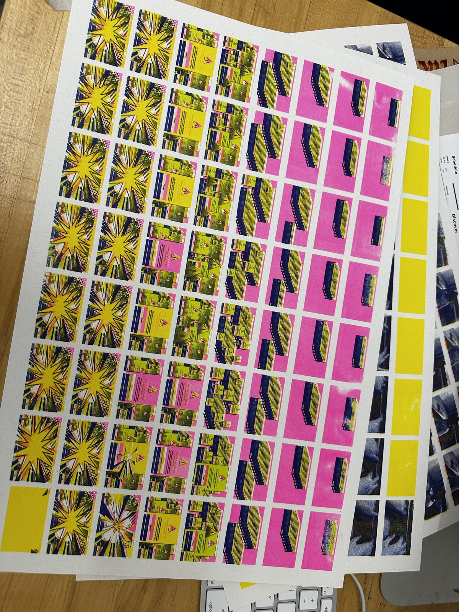
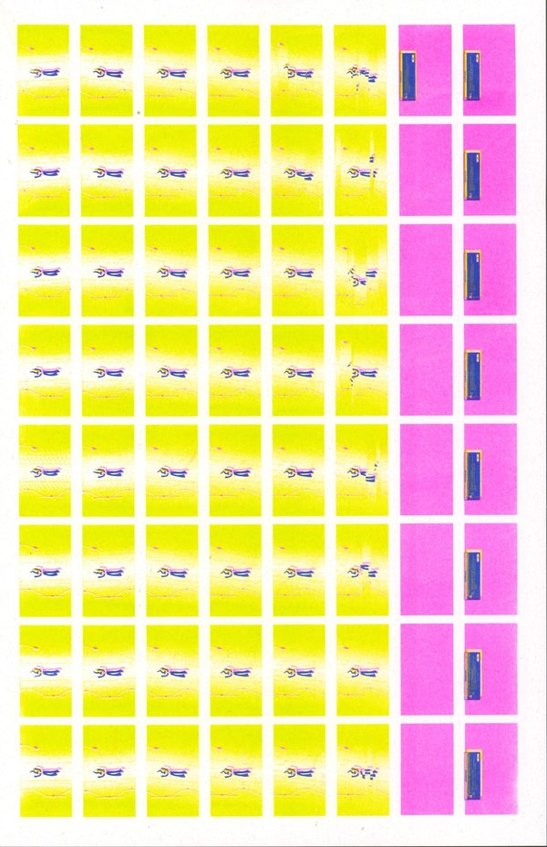
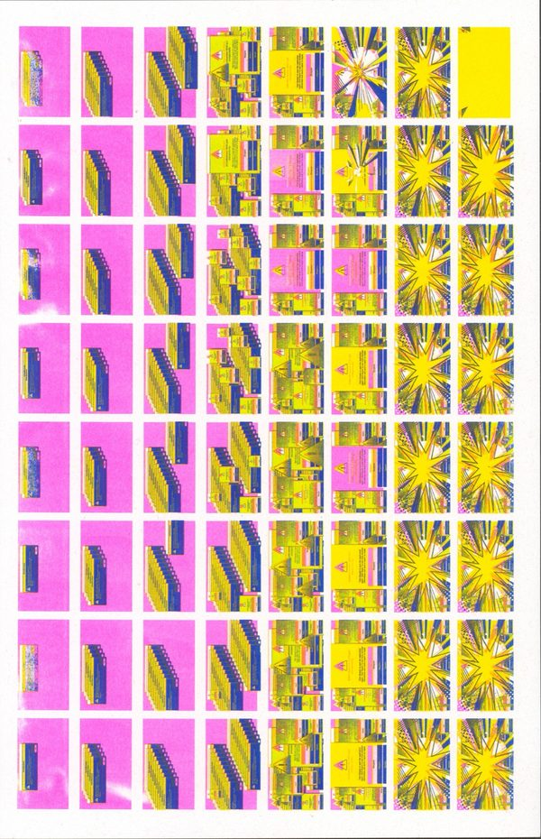
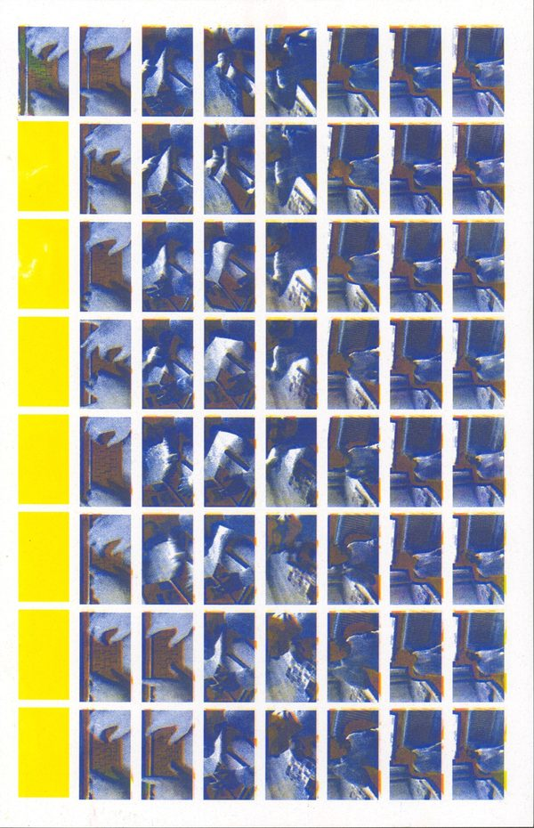
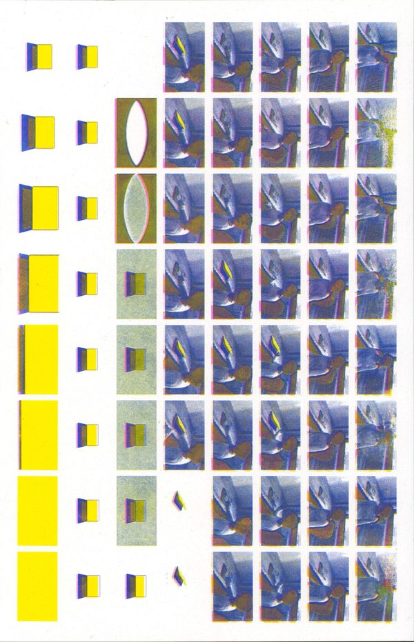

Design Bepop
A Risograph animation in which a battle moves across different visual styles and universes, and turns out to be a designer’s endless struggle with Adobe Illustrator.
- Year
- 2026
- Class and project
- Graphic Design: Sight of Sound, Boston University
- Tools and medium
- Adobe After Effects, Adobe Photoshop, CapCut, Figma, Videography, Risograph Printing
- Collaboration
- Team of 4









